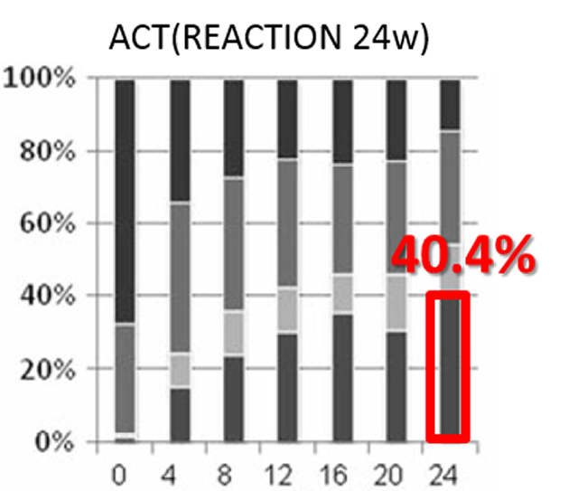

対オレンシア③有効性
Efficacy：1stline メタ解析（TCZ vs ABT）
ACTはOREより有効性が高いと報告されている論文が多数ある
海外臨床試験メタ解析①
ACTのACR50改善オッズはOREの1.97倍
Carine S, et al. Ann Rheum Dis 2011;70:266–271.
国内実臨床 国内4大学データ
ACTの方がOREよりDAS寛解率が高い（2倍以上）

Yamanaka H, et al. Mod Rheumatol. 2011 Apr;21(2):122-33.
Tanaka Y, et al. Mod Rheumatol. 2014 Sep;24(5):754-62.
海外臨床試験メタ解析②
ACTのACR70改善率はOREより高い
Bergman GJ, et al. Semin Arthritis Rheum. 2010 Jun;39(6):425-41.
海外実臨床 DANBIO registry（デンマーク）
ACTの方がOREよりDAS寛解率が高い（約2倍）